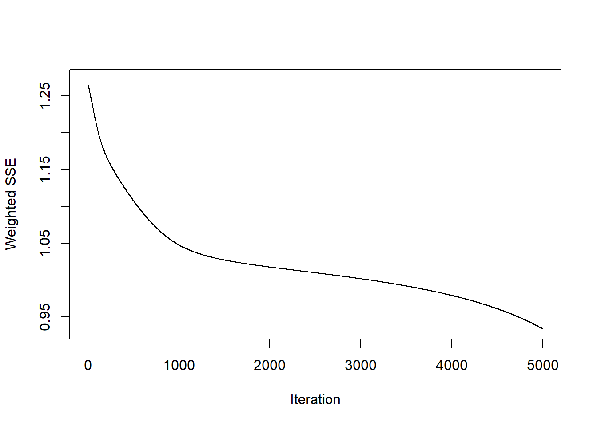
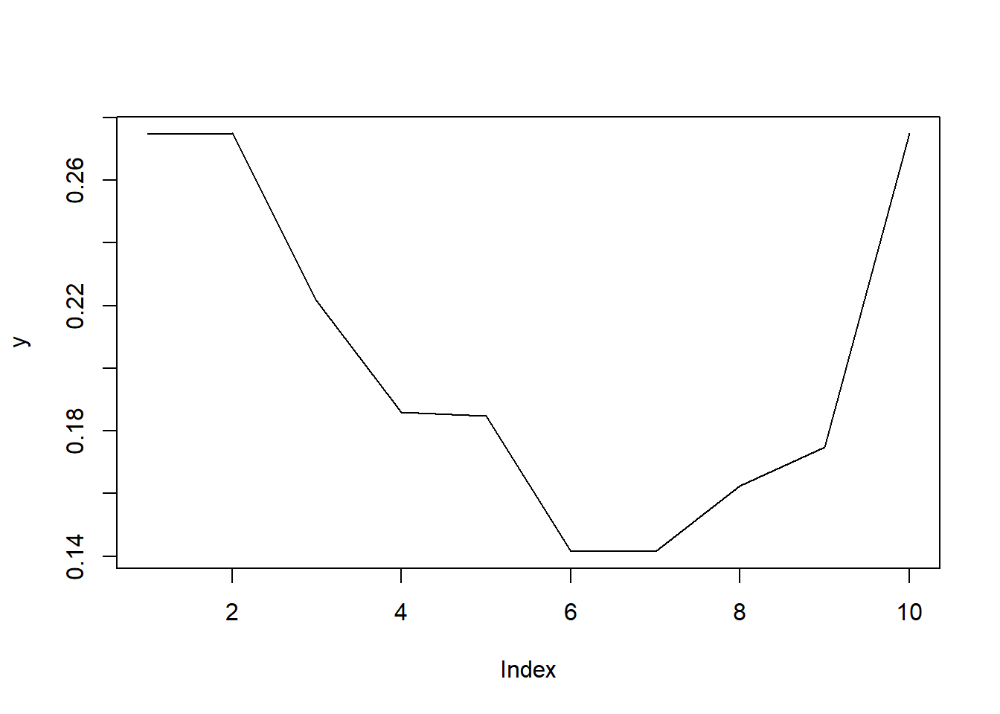

Capítulo 6 Unidad 7
Actividad 7
Cargar los datos
## Warning: package 'openxlsx' was built under R version 4.2.3# Leer el archivo Excel que ya tienes cargado
datos <- read.xlsx("importacionestriadadef.xlsx")
summary(datos)## Fecha Año Mes Año-mes
## Length:73 Min. :2010 Length:73 Length:73
## Class :character 1st Qu.:2011 Class :character Class :character
## Mode :character Median :2013 Mode :character Mode :character
## Mean :2013
## 3rd Qu.:2014
## Max. :2016
## FECHA_PRESENTACION VALOR_FOB_USD PESTICIDA
## Min. :40210 Min. :2.828 Length:73
## 1st Qu.:40756 1st Qu.:3.977 Class :character
## Median :41306 Median :4.554 Mode :character
## Mean :41304 Mean :4.484
## 3rd Qu.:41852 3rd Qu.:4.922
## Max. :42401 Max. :7.006## Warning: package 'dplyr' was built under R version 4.2.3##
## Attaching package: 'dplyr'## The following objects are masked from 'package:stats':
##
## filter, lag## The following objects are masked from 'package:base':
##
## intersect, setdiff, setequal, union## Warning: package 'zoo' was built under R version 4.2.3##
## Attaching package: 'zoo'## The following objects are masked from 'package:base':
##
## as.Date, as.Date.numeric## Jan Feb Mar Apr May Jun Jul Aug
## 2010 2.828185 2.834620 3.854530 2.916667 4.409457 4.636978 3.571429 4.855076
## 2011 5.179527 4.704291 3.571429 4.974490 3.899573 5.014854 5.325329 4.851072
## 2012 5.288699 4.429228 4.861111 3.885281 5.654762 4.874827 4.727683 4.894822
## 2013 4.664036 4.489247 4.005792 5.400073 4.488467 5.071175 4.414930 4.889079
## 2014 4.761905 5.257170 4.104882 5.001191 4.554254 4.581352 5.118161 4.549266
## 2015 3.976744 3.976744 3.976744 3.975938 3.976744 3.753920 3.605116 3.599848
## 2016 3.976744
## Sep Oct Nov Dec
## 2010 4.885341 4.969938 4.761905 5.654762
## 2011 4.376815 4.921825 5.105262 5.196981
## 2012 4.586640 6.547619 4.105804 4.838826
## 2013 4.935887 4.397211 4.075954 4.761905
## 2014 4.140230 7.006366 3.953889 3.976744
## 2015 3.419432 3.419467 3.506439 3.558834
## 2016# Normalización Min-Max
valores_normalizados <- (precios_ts - min(precios_ts)) / (max(precios_ts) - min(precios_ts))
# Mostrar los valores normalizados
print(valores_normalizados)## Jan Feb Mar Apr May Jun
## 2010 0.000000000 0.001540135 0.245643824 0.021177001 0.378459431 0.432913998
## 2011 0.562766756 0.449024580 0.177886811 0.513693546 0.256424361 0.523354163
## 2012 0.588895916 0.383191300 0.486557648 0.253003910 0.676508932 0.489840433
## 2013 0.439390005 0.397556139 0.281846635 0.615551958 0.397369584 0.536834125
## 2014 0.462813737 0.581349803 0.305562699 0.520084251 0.413114912 0.419600443
## 2015 0.274894490 0.274894490 0.274894490 0.274701612 0.274894490 0.221564121
## 2016 0.274894490
## Jul Aug Sep Oct Nov Dec
## 2010 0.177886811 0.485113246 0.492356852 0.512604179 0.462813737 0.676508932
## 2011 0.597662980 0.484154983 0.370646987 0.501088921 0.544992419 0.566944167
## 2012 0.454623145 0.494625967 0.420866162 0.890204127 0.305783458 0.481223871
## 2013 0.379769369 0.493251410 0.504454368 0.375528475 0.298639189 0.462813737
## 2014 0.548079725 0.411921183 0.314022931 1.000000000 0.269424441 0.274894490
## 2015 0.185949580 0.184688783 0.141508216 0.141516575 0.162332249 0.174872328
## 2016Redes Neuronales Recurrentes.
6.1 Redes Neuronales ELMAN
## Loading required package: RSNNS## Warning: package 'RSNNS' was built under R version 4.2.3## Loading required package: Rcpp## Warning: package 'Rcpp' was built under R version 4.2.3## Loading required package: quantmod## Warning: package 'quantmod' was built under R version 4.2.3## Loading required package: xts## Warning: package 'xts' was built under R version 4.2.3##
## ######################### Warning from 'xts' package ##########################
## # #
## # The dplyr lag() function breaks how base R's lag() function is supposed to #
## # work, which breaks lag(my_xts). Calls to lag(my_xts) that you type or #
## # source() into this session won't work correctly. #
## # #
## # Use stats::lag() to make sure you're not using dplyr::lag(), or you can add #
## # conflictRules('dplyr', exclude = 'lag') to your .Rprofile to stop #
## # dplyr from breaking base R's lag() function. #
## # #
## # Code in packages is not affected. It's protected by R's namespace mechanism #
## # Set `options(xts.warn_dplyr_breaks_lag = FALSE)` to suppress this warning. #
## # #
## #################################################################################
## Attaching package: 'xts'## The following objects are masked from 'package:dplyr':
##
## first, last## Loading required package: TTR## Warning: package 'TTR' was built under R version 4.2.3## Registered S3 method overwritten by 'quantmod':
## method from
## as.zoo.data.frame zooLa red neuronal de Elman (ENN) es una de las redes neuronales recurrentes (RNN) . En comparación con las redes neuronales tradicionales, ENN tiene entradas adicionales de la capa oculta, que forma una nueva capa: la capa de contexto. Por lo tanto, el algoritmo de retropropagación (BP) estándar utilizado en ENN se llama algoritmo de retropropagación de Elman (EBP)
Se tienen 73 datos de los cuales se seleccionan los 58 primeros datos para entrenar la red y el restante para hacer el test.
Se renombran las variables siendo x la variable tiempo, y la variable del costo del pesticidad. Posteriormente la serie se normaliza. (0-1).
## Jan Feb Mar Apr May Jun
## 2010 0.000000000 0.001540135 0.245643824 0.021177001 0.378459431 0.432913998
## 2011 0.562766756 0.449024580 0.177886811 0.513693546 0.256424361 0.523354163
## 2012 0.588895916 0.383191300 0.486557648 0.253003910 0.676508932 0.489840433
## 2013 0.439390005 0.397556139 0.281846635 0.615551958 0.397369584 0.536834125
## 2014 0.462813737 0.581349803 0.305562699 0.520084251 0.413114912 0.419600443
## 2015 0.274894490 0.274894490 0.274894490 0.274701612 0.274894490 0.221564121
## 2016 0.274894490
## Jul Aug Sep Oct Nov Dec
## 2010 0.177886811 0.485113246 0.492356852 0.512604179 0.462813737 0.676508932
## 2011 0.597662980 0.484154983 0.370646987 0.501088921 0.544992419 0.566944167
## 2012 0.454623145 0.494625967 0.420866162 0.890204127 0.305783458 0.481223871
## 2013 0.379769369 0.493251410 0.504454368 0.375528475 0.298639189 0.462813737
## 2014 0.548079725 0.411921183 0.314022931 1.000000000 0.269424441 0.274894490
## 2015 0.185949580 0.184688783 0.141508216 0.141516575 0.162332249 0.174872328
## 2016Se elabora la grafica de los datos normalizados.
También, definimos como variables de entrenamiento en serie, los n valores anteriores de la misma. Si tenemos valores mensuales de una variable, 12 podría ser un mejor valor para n. Lo que haremos será crear un marco de datos con n columnas, cada una de las cuales se construye avanzando un valor de la serie en el futuro, a través de una variable de tipo zoo:
y<-as.zoo(valores_normalizados)
x1<-Lag(y,k=1)
x2<-Lag(y,k=2)
x3<-Lag(y,k=3)
x4<-Lag(y,k=4)
x5<-Lag(y,k=5)
x6<-Lag(y,k=6)
x7<-Lag(y,k=7)
x8<-Lag(y,k=8)
x9<-Lag(y,k=9)
x10<-Lag(y,k=10)
x11<-Lag(y,k=11)
x12<-Lag(y,k=12)
datos_ts<-cbind(y,x1,x2,x3,x4,x5,x6,x7,x8,x9,x10,x11,x12)Eliminar NA que se produce al desplazar la serie
Se define los valores de entrada y salida de la red neuronal
Crear red Elman y entrenarla
fit<-elman(inputs[train],
outputs[train],
size=c(4,2),
#size=6,
learnFuncParams=c(0.1),
maxit=5000)
plotIterativeError(fit)
y<- as.vector(outputs[-train])
plot(y,type="l")
pred<-predict(fit,inputs[-train])
lines(pred,col="red")
## [,1]
## abr. 2015 0.8303094
## may. 2015 0.6369057
## jun. 2015 1.0472345
## jul. 2015 0.7196131
## ago. 2015 1.1309210
## sept. 2015 0.8756845
## oct. 2015 0.6233809
## nov. 2015 0.9905369
## dic. 2015 1.0576811
## ene. 2016 1.1181823Desnormalizar los datos
## [,1]
## abr. 2015 6.297368
## may. 2015 5.489293
## jun. 2015 7.203720
## jul. 2015 5.834859
## ago. 2015 7.553378
## sept. 2015 6.486953
## oct. 2015 5.432783
## nov. 2015 6.966828
## dic. 2015 7.247368
## ene. 2016 7.500153Aquí vemos la gráfica con los valores pronosticados con la linea roja. -Los valores que adelantamos en el tiempo corresponden a mod1, de los cuales adelantaremos 10 meses a futuro para nuestro estudio.
6.2 Redes Neuronales JORDAN
En las redes Jordan, la diferencia esta en que la entrada de las neuronas de la capa de contexto se toma desde la salida de la red.
Realizamos las mismas operaciones que con la red Elman, sustituyendo el modelo, obtenemos el resultado para la red Jordan.
library(RSNNS)
set.seed(42)
fit<-jordan(inputs[train],
outputs[train],
size=5,
learnFuncParams=c(0.01),
maxit=5000)
plotIterativeError(fit,main="Iteraciones error 5 neuronas")
y<- as.vector(outputs[-test])
plot(y,type = "l")
pred<-predict(fit,inputs[-test])
lines(pred,col="red")
## [,1]
## abr. 2015 4.991469
## may. 2015 4.596467
## jun. 2015 5.280013
## jul. 2015 4.566146
## ago. 2015 5.120075
## sept. 2015 5.250723
## oct. 2015 4.271105
## nov. 2015 4.968171
## dic. 2015 4.897899
## ene. 2016 4.931088x <- 1:(tamano_total+length(mod2))
y <- c(as.vector(precios_ts),mod2)
plot(x[1:tamano_total], y[1:tamano_total],col = "blue", type="l")
lines( x[(tamano_total):length(x)], y[(tamano_total):length(x)], col="red")Estimación del error comparativo
## [1] 6.297368 5.489293 7.203720 5.834859 7.553378 6.486953 5.432783 6.966828
## [9] 7.247368 7.500153## Jan Feb Mar Apr May Jun Jul Aug
## 2016 6.297368 5.489293 7.203720 5.834859 7.553378 6.486953 5.432783 6.966828
## Sep Oct Nov Dec
## 2016 7.247368 7.500153 NA NA## Jan Feb Mar Apr May Jun Jul Aug
## 2016 4.991469 4.596467 5.280013 4.566146 5.120075 5.250723 4.271105 4.968171
## Sep Oct
## 2016 4.897899 4.931088Conclusion: La dos metodologias nos presentan un pronostico, enla grafica de error se evidencian graficos similares y con un error minimo al momento de hacer las iteraciones. Sin embargo, en la proyección se observa una curva más conservadora en cuanto a tendecia, por lo tanto, escogeriamos el metodo Jordan para este ejercicio.